Woman, Behold Thy Son
Simeon promised Mary a sword. At the cross, Jesus watched it land, and gave her a son.

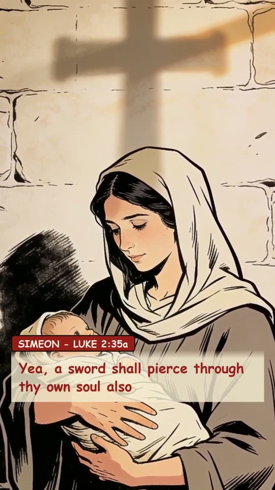
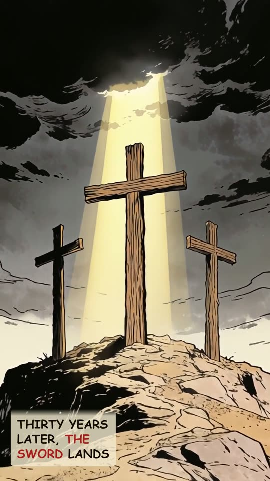
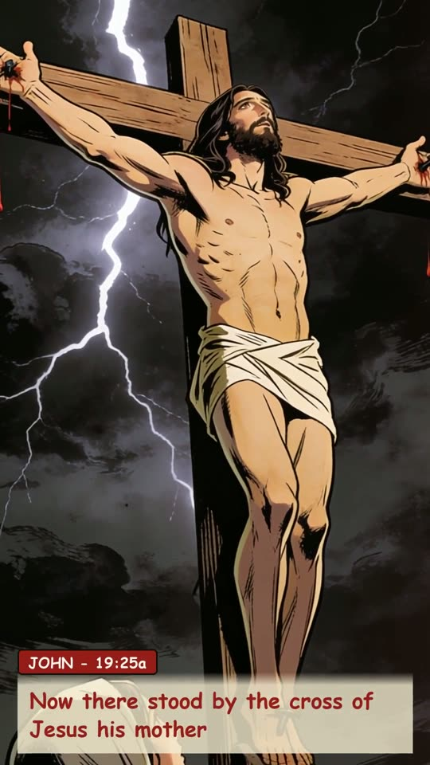
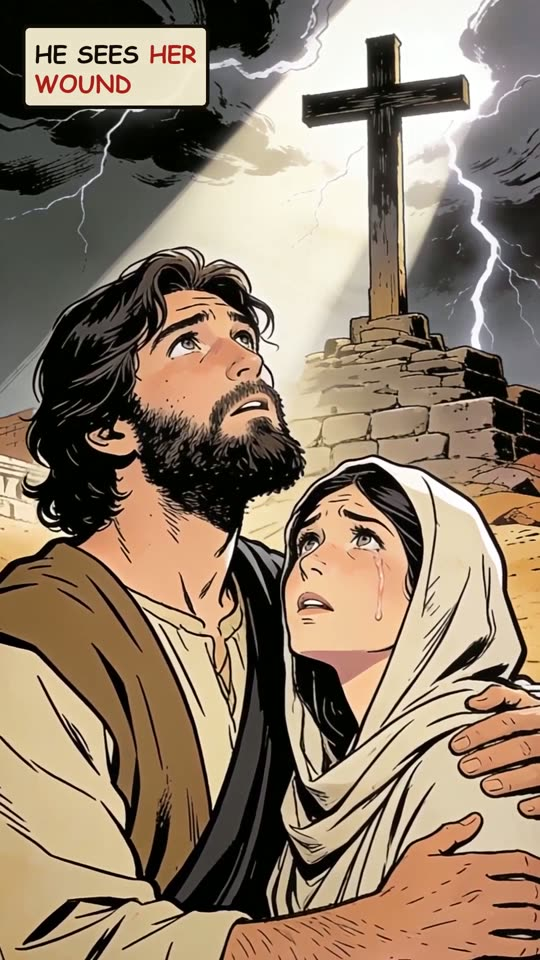
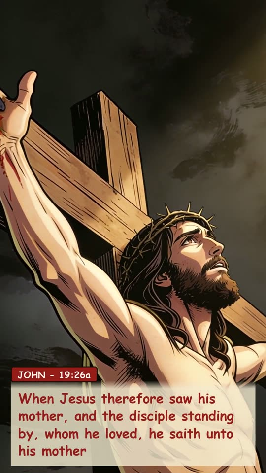
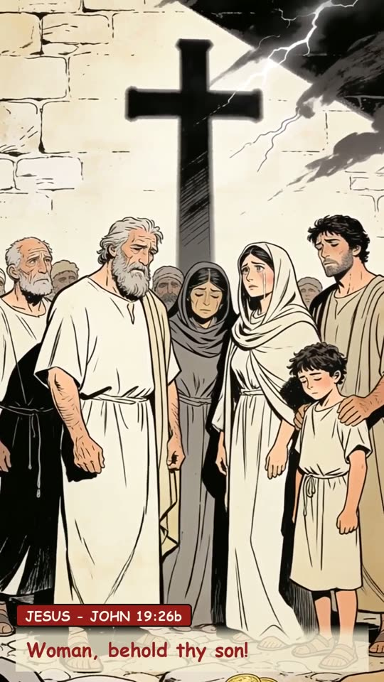
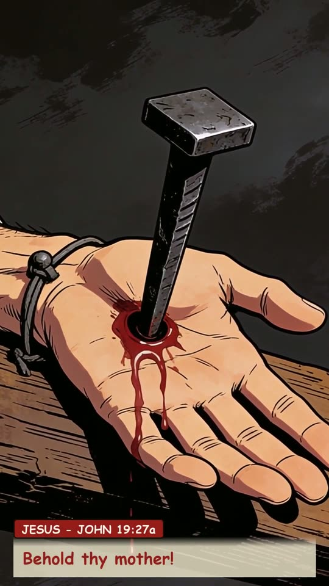
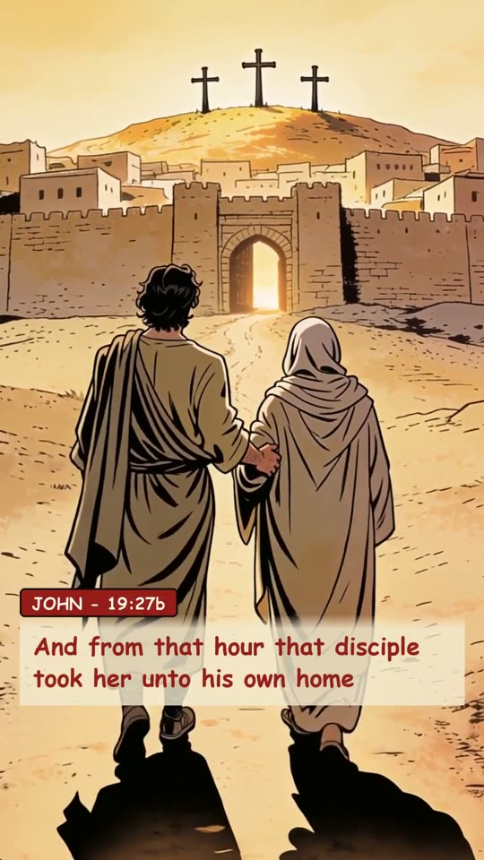
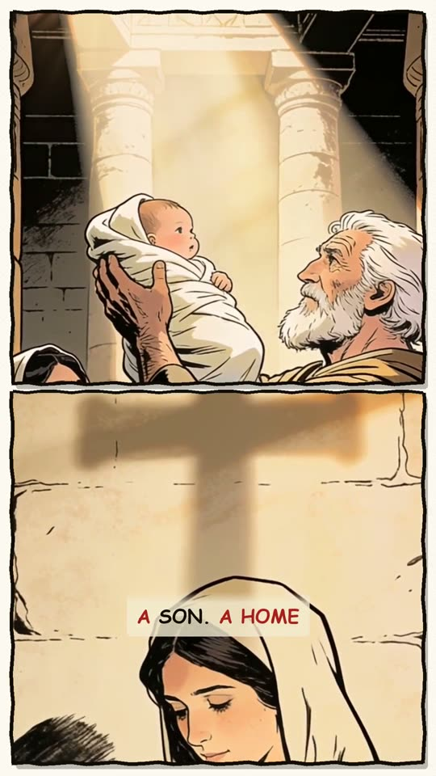
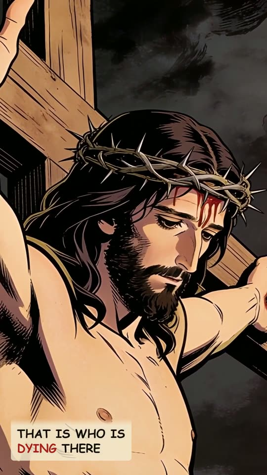
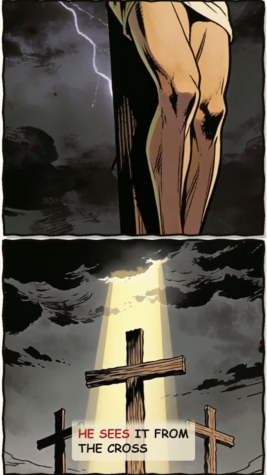
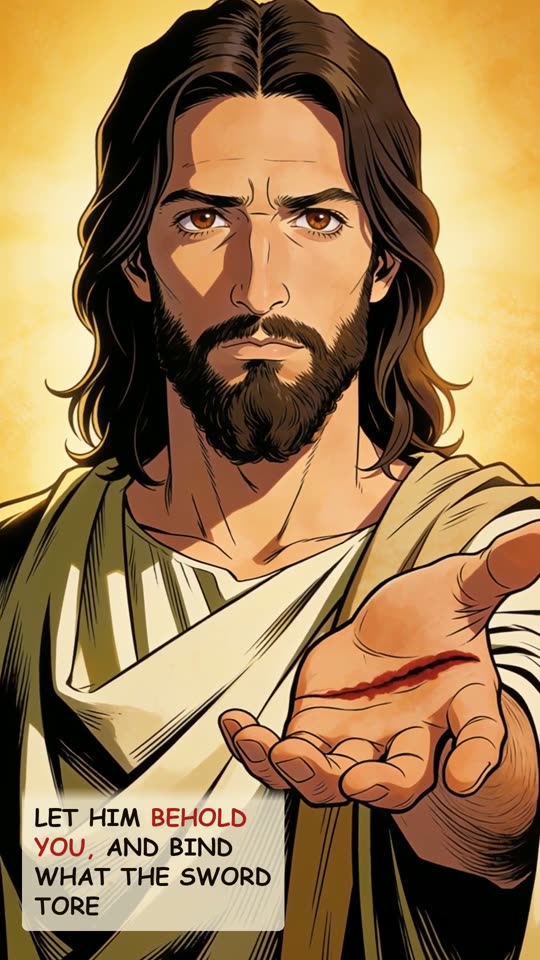
The narration
An old man in the temple held a baby and told the mother one dark sentence. Yea, a sword shall pierce through thy own soul also. Simeon told Mary. Some thirty years later, the sword lands. Now there stood by the cross of Jesus his mother. Close enough to watch her son die. Jesus looks down, sees her wound, and turns to bind it. When Jesus therefore saw his mother, and the disciple standing by, whom he loved, he saith unto his mother, Woman, behold thy son! Then saith he to the disciple, Behold thy mother! And from that hour that disciple took her unto his own home. He gave her the disciple he loved. A son. A home. While judgment fell on him, he cared for someone else. That is who is dying there. Your wound is not invisible to him. He sees it from the cross. Stand where Mary stood. The Son who saw her will behold you, and bind what the sword tore.